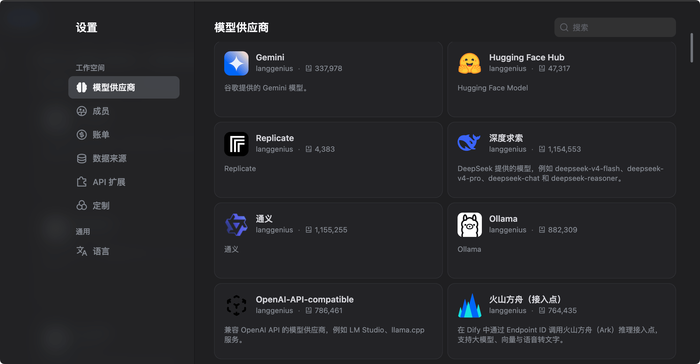
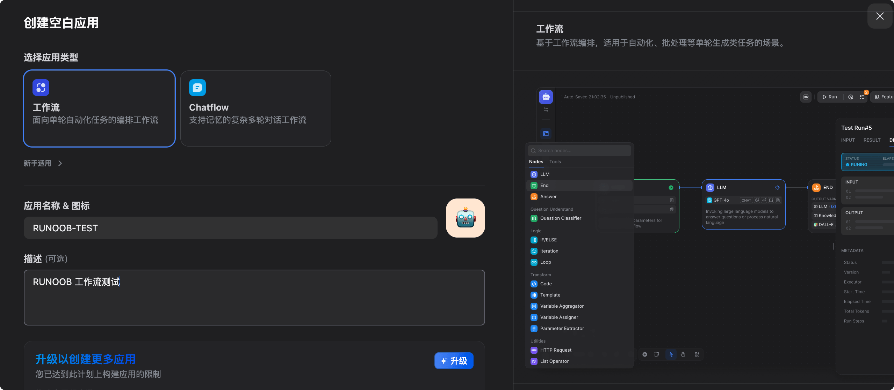
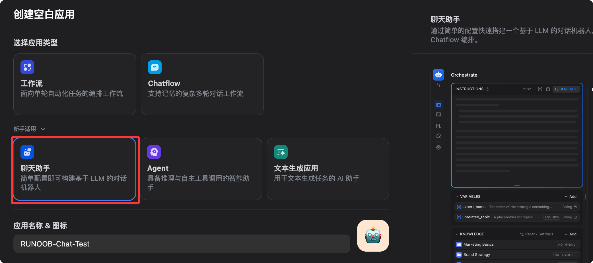

Dify Getting Started Tutorial
Dify（Do It For You）是当前最受欢迎的开源 LLM 应用开发平台，专为构建由大型语言模型（LLM）驱动的生成式 AI 应用而设计。
Dify 将 AI 工作流编排、RAG 知识库、Agent 框架、模型管理、可观测性整合在一个可视化平台里，让你快速从原型走向生产，无需从零搭建 LLM 基础设施。
Dify 通过集成 RAG 流水线、AI 工作流、可观测性工具和模型管理，简化了 AI 应用的创建过程。
如果说 LangChain 是AI 应用的零件工厂（灵活但需要大量手写代码），那 Dify 就是AI 应用的可视化 IDE——组件都在，拖拽连线就能跑。

Comparison with Other Tools
以下是 Dify 与 LangChain、n8n 在关键维度上的对比。
| 维度 | Dify | LangChain | n8n |
|---|---|---|---|
| 主要用户 | 开发者 + 产品经理 | 开发者 | 运营/自动化 |
| 编程要求 | 低代码 / 无代码 | 需要写 Python/JS | 低代码 |
| RAG 内置 | 完整内置 | 需要手动组装 | 有限 |
| Agent 框架 | 内置 | 内置 | 有限 |
| Observability | Built-in | Third-party required | Limited |
| Self-hosted | Fully supported | Supported | Supported |
| License | Apache 2.0 | MIT | Fair-code |
Dify's intuitive visual orchestration studio makes it an ideal choice for startups and enterprises that need to quickly build functional AI applications.
LangChain is more suitable for complex enterprise-level applications that require custom integrations and deep developer involvement.
Who is using Dify?
From biomedicine to the automotive industry, Dify provides reliable solutions for a wide range of enterprises.
Volvo Cars uses Dify for rapid idea validation in AI frontier strategy navigation.
Users highly praise Dify for democratizing AI Agent development by combining powerful AI/ML capabilities into a no-code platform.
Core Concepts
Before you begin, let's understand the basic concepts of Dify:
| Concept | Description |
|---|---|
| App | The basic deployment unit in Dify. Each app corresponds to an independent AI function, with its own System Prompt, associated knowledge base, tool configuration, and API Key. |
| Knowledge Base | A knowledge base is your own data collection that can be integrated into AI applications. It provides LLMs with your proprietary data as an additional source of truth when answering, ensuring answers are more accurate, more relevant, and less prone to hallucinations. |
| RAG (Retrieval-Augmented Generation) | When a user asks a question, the system first retrieves the most relevant information from the knowledge base (Retrieval), then combines the retrieved results with the user's original question and sends them to the LLM (Augmented), and the LLM generates a more precise answer based on this context (Generation). |
| Workflow | Build and test powerful AI workflows on a visual canvas, defining multi-step AI processing logic by dragging nodes and connecting lines. |
| Agent | Agents can be defined based on LLM Function Calling or ReAct, with pre-built or custom tools added to them. Dify provides over 50 built-in tools for AI Agents, such as Google Search, DALL E, Stable Diffusion, and WolframAlpha. |
| Node | The basic unit of a workflow; each node performs a specific operation: LLM reasoning, knowledge retrieval, code execution, HTTP requests, conditional branching, etc. |
Installation and Startup
Four installation methods, from instant start to high-availability cluster deployment.
Method 1: Dify Cloud (Fastest, 0-second onboarding)
Visitcloud.dify.ai, register an account and start using it immediately.
The free Sandbox plan includes 200 messages per month and 5 applications, with no environment configuration required.
Suitable for quick trials, personal projects, and prototyping.

Method 2: Docker Compose Self-hosting (Recommended for Production)
Suitable for users with technical background, giving full control over data and deployment environment.
System requirements
| Resource | Minimum requirement | Recommended configuration |
|---|---|---|
| CPU | 2 cores | 4 cores |
| Memory | 4 GB | 8 GB |
| Disk | 20 GB | 50 GB+ |
| Docker | Engine 20.10+ | Latest version |
| Docker Compose | v2.2+ | Latest version |
Installation steps
Step 1: Clone the repository
Clone the Dify repository to your local machine:
git clone https://github.com/langgenius/dify.git cd dify
Step 2: Enter the docker directory and copy the environment configuration
cd docker # 从模板复制环境配置文件 cp .env.example .env
Step 3 (Important): Configure SECRET_KEY
Since v1.14.1, Docker deployments no longer rely on a public default secret key. When SECRET_KEY is empty, the API automatically generates and persists a runtime key. It is recommended to explicitly set it in the .env file.
# 生成一个安全的随机密钥 openssl rand -base64 42
Edit the .env file, find SECRET_KEY, and set it to the random string generated above:
SECRET_KEY=your-very-long-random-secret-key-here
Step 4: Start the service
# 启动所有 Dify 服务（首次会拉取镜像，约需 3-10 分钟） docker compose up -d
Step 5: Access and initialize
Open http://localhost/install in your browser and complete the admin account registration.
Step 6: Verify service status
# 查看所有容器状态，全部为 healthy 即表示运行正常 docker compose ps
If all containers (api, worker, web, db, redis, weaviate, nginx, etc.) are in healthy status, the services are running normally.
Stop and restart
# 停止所有服务（数据保留在 Docker volumes 中） docker compose down # 重新启动所有服务 docker compose up -d
Upgrade to a new version
# 进入 docker 目录 cd dify/docker # 拉取最新代码 git pull origin main # 拉取新镜像 docker compose pull # 重新启动 docker compose up -d
Data is persisted in Docker volumes, and updates will not affect existing applications, knowledge bases, or conversation history. It is recommended to back up the PostgreSQL database before major version upgrades.
Method 3: One-click Deployment on AWS Marketplace
For startups and small businesses operating on AWS, Dify Premium on AWS Marketplace enables one-click deployment to your own AWS VPC, and supports custom Logo and branding.
Method 4: Kubernetes Deployment (High Availability)
For scenarios requiring high availability configuration, the community provides Helm Charts and YAML files to deploy Dify to a Kubernetes cluster.
# 添加 Dify Helm 仓库 helm repo add dify https://langgenius.github.io/dify-helm # 使用自定义 values.yaml 安装 helm install dify dify/dify -f values.yaml
Configure Model Providers
After installation, the first step is to connect your AI model.
Operation Path
After logging into Dify, click the avatar in the upper-right corner, go to Settings, and select Model Provider.

For example, we can install the DeepSeek model provider, then configure the API key:

Mainstream Provider Configuration
Anthropic (Claude series):
Provider: Anthropic API Key: sk-ant-xxxxxxxx（从 console.anthropic.com 获取） 推荐模型：claude-sonnet-4-6（综合性能最佳）
OpenAI：
Provider: OpenAI API Key: sk-xxxxxxxx（从 platform.openai.com 获取） 推荐模型：gpt-4o（性价比高）
Google (Gemini series):
Provider: Google API Key: xxxxxxxx（从 aistudio.google.com 获取） 推荐模型：gemini-2.0-flash（速度快，适合大量请求）
OpenRouter (one key to access 300+ models):
Provider: OpenRouter API Key: sk-or-xxxxxxxx（从 openrouter.ai 获取） Base URL: https://openrouter.ai/api/v1
Local model (Ollama):
Provider: Ollama Base URL: http://host.docker.internal:11434 # Docker 内访问宿主机 （先在宿主机运行：ollama pull llama3.3）
Configure Embedding Model (Required for Knowledge Base)
Vectorization of the knowledge base requires an Embedding model. Below are recommended options:
| Model | Features | Applicable Scenarios |
|---|---|---|
| OpenAI text-embedding-3-small | Cheap and effective | General scenarios |
| Zhipu AI embedding-3 | Excellent Chinese support | Content primarily in Chinese |
| Local nomic-embed-text (Ollama) | Fully offline | High data security requirements |
Verify Model Availability
Go back to Settings, find the configured provider, click the Test button next to the model name. A green checkmark indicates successful configuration.
Detailed Explanation of Five Application Types
On the Dify homepage, click Create App. You will see five types, each corresponding to different usage scenarios.

Click to create a blank application, and you can see five types of applications:

1. Chatbot (Conversational Assistant)
A standard multi-turn conversation application with persistent session memory.
| Attribute | Description |
|---|---|
| Suitable scenarios | Customer service bots, personal assistants, FAQ Q&A |
| Core features | Built-in conversation memory (configurable memory strategy), attachable knowledge base (enable RAG), supports streaming output, one-click publishing as web embed code. |
2. Text Generator
Single input to single output, no conversation history retained.
| Attribute | Description |
|---|---|
| Suitable scenarios | Article rewriting, summary generation, SEO copywriting, email drafting |
| Core features | Clear structure (input form + output text), suitable for batch processing, supports variable placeholders (e.g., {{product_name}}) |
3. Agent
An AI that can proactively call tools, autonomously plan and execute multi-step tasks.
| Attribute | Description |
|---|---|
| Suitable Scenarios | Data query and analysis, search and summarization, code execution |
| Core Features | Supports two reasoning modes: Function Calling and ReAct; built-in 50+ tools (search, image generation, code interpreter, etc.); supports custom API tools; tool calling process is visible to users |
4. Chatflow (Conversation Flow)
Adds multi-turn conversation capabilities on top of Workflow, combining process orchestration and conversation context.
| Attribute | Description |
|---|---|
| Suitable Scenarios | Complex customer service processes, chatbots requiring multi-step decision-making |
| Core Features | Both the node orchestration capabilities of Workflow and multi-turn conversation memory, allowing automated processes to be triggered within the conversation |
5. Workflow
A purely automated multi-step processing flow without a conversational interface, triggered via API or run manually.
| Attribute | Description |
|---|---|
| Suitable Scenarios | Batch data processing, scheduled automated tasks, backend AI processing pipelines |
| Core Features | Build and test AI workflows on a visual canvas; supports parallel branches, loops, and conditional logic; supports Human-in-the-Loop (Human Input node); output results can be integrated with other systems |
Selection Guide
Quickly decide which application type to use based on your needs:
需要多轮对话？
├─ 是 → 需要复杂流程逻辑？
│ ├─ 是 → Chatflow
│ └─ 否 → Chatbot 或 Agent（需要工具调用时选 Agent）
└─ 否 → 单次输入输出？
├─ 是 → Text Generator
└─ 需要多步骤自动化 → Workflow
Knowledge Base (RAG): Let AI Answer with Your Private Data
The Knowledge Base is one of Dify's most powerful features and the core of most enterprise applications.
Create a Knowledge Base
- In the navigation bar, select Knowledge (Knowledge Base), and click Create Knowledge (Create Knowledge Base).
- Name the knowledge base, e.g., 'Product Manual' or 'Internal Policy Documents'
- Choose a creation method

Method 1: Upload files (most common)
Dify accepts files in PDF, Word (.docx), Markdown (.md), plain text (.txt), CSV, and HTML formats.
Markdown or plain text is recommended, as they are the most reliable to parse.
布局复杂或扫描版的 PDF 可能需要预处理，建议先用 OCR 工具提取文本后再上传。
方式二：Knowledge Pipeline（企业级）
Knowledge Pipeline 是一个可视化的节点式编排系统，专门用于文档摄取处理。
它解决了传统 RAG 的三大痛点：分散的数据源、解析过程中的信息丢失（图表和公式被丢弃）、以及黑盒处理过程（难以诊断失败原因）。
方式三：外部知识库 API
通过 API 同步现有的外部知识库，无需数据迁移。
Document Chunking Strategy
上传后，Dify 会自动进行文本分块（Chunking）。关键参数说明如下：
| 参数 | 说明 | 推荐值 |
|---|---|---|
| 分块大小 | 每个 Chunk 的 Token 数 | 500-1000（中文） |
| 分块重叠 | 相邻 Chunk 的重叠 Token 数 | 50-100 |
| 分隔符 | 按什么切割（段落/句子） | 段落 |
中文内容建议分块大小设置在 500 Token 左右。太长会让检索不够精准，太短会丢失上下文。
Index Modes
| 模式 | 说明 | 成本 |
|---|---|---|
| 高质量（默认） | 使用 Embedding 模型生成向量，效果最好 | 消耗 Embedding API |
| 经济模式 | 倒排索引（关键词匹配），无需 Embedding | 免费 |
Retrieval Configuration
进入知识库，选择 Settings，配置检索参数：
| 检索方式 | 说明 | 适用场景 |
|---|---|---|
| 向量检索 | 语义相似度匹配 | 意义相关的查询 |
| 全文检索 | 关键词匹配 | 精确词汇查询 |
| 混合检索（推荐） | 结合两者，并用重排序模型提升精度 | 通用场景 |
相似度阈值建议设置 0.5-0.7。
相似度阈值太高会导致无结果返回，太低会返回不相关内容。建议从 0.6 开始测试，根据效果微调。
Test Retrieval Results
In the knowledge base, click Retrieval Testing, enter a test question, and directly view the returned Chunks to verify retrieval quality without actually starting a conversation.
Associate Knowledge Base with an Application
On the application editing page, select Context, click Add, choose the created knowledge base, and save.
Once linked, every conversation in the application will first retrieve from the knowledge base before answering.
Workflow: Visually Orchestrate Multi-step Tasks
Define multi-step AI processing logic by dragging nodes and connecting them.
Enter the Workflow Editor
Select Workflow when creating an application, or click Edit in an existing Workflow application to enter the canvas.

Main Node Types
The following are the most commonly used nodes in the Workflow editor and their functions:
| Node | Function | Typical use case |
|---|---|---|
| Start | Process entry, defines input variables | Receives user input or external parameters |
| LLM | Call language model | Text generation, analysis, translation |
| Knowledge Retrieval | Retrieve from knowledge base | RAG scenarios |
| IF/ELSE | Conditional branch | Routes different processing paths based on content |
| Code | Execute Python or JS code | Data transformation, format processing, calculations |
| HTTP Request | Call external API | Query database, send notifications |
| Template | Variable template rendering | Combine outputs from multiple nodes |
| Variable Assigner | Set/Update variables | Pass data across nodes |
| Iteration | Loop through lists | Batch process multiple data items |
| Agent | Embedded Agent node | Gives a step in the workflow autonomous reasoning capability |
| Human Input | Pause and wait for human review | Key decision point for human-machine collaboration |
| End | Process exit, defines output | Returns the final result |

Variable Passing Between Nodes
The output of each node can be referenced by subsequent nodes using the syntax {{node_name.output_variable_name}}.
The following is an example of variable passing in a typical RAG Q&A workflow:
Start 节点输出 user_query
↓
Knowledge Retrieval 节点：
输入：{{Start.user_query}}
输出：result（检索结果）
↓
LLM 节点：
System Prompt：你是一个客服助理，根据以下资料回答问题
User：用户问题：{{Start.user_query}}
参考资料：{{Knowledge Retrieval.result}}
↓
End 节点：
返回：{{LLM.text}}
Human Input Node (HITL)
The Human Input node is a major update that allows workflows to pause execution at key decision points.
This node generates a UI interface for human review and modification of variables (e.g., editing drafts or correcting data), and then determines the subsequent path based on custom buttons (such as "Approve", "Reject", or "Escalate").
This resolves the binary dilemma of previous workflows—"either fully automated or fully manual"—allowing high-risk scenarios (contract review, medical advice, financial decisions) to also benefit from automated AI.
Debugging the Workflow
Click Run (运行) in the top-right corner of the canvas, enter test parameters, and observe each node's input/output and latency.
Green (success) or red (failure) indicators appear next to nodes; click to view detailed execution logs.
Hands-on Scenario 1: Enterprise Internal Knowledge Q&A Bot
Use Dify to build a chatbot that can accurately answer questions about internal documents, with source citations in answers.
Business Background
The company has a large number of internal documents (HR policies, product manuals, technical Wiki). Employees often need to find information, but the documents are scattered and difficult to search.
Step 1: Prepare the Knowledge Base
- Organize documents: export HR policies (PDF), product manuals (Word), and technical Wiki (Markdown) for use.
- Under Knowledge, select Create Knowledge and name it "Company Internal Knowledge Base".
- Upload files and select the high-quality indexing mode.
- Wait for vectorization to complete (shown by progress bar).
Document quality optimization tips: remove irrelevant information, headers/footers, and special characters. Use clear headings and short paragraphs. If a document covers multiple different topics, consider splitting it into separate files.
Step 2: Create a Chatbot Application
- Click Create App, select Chatbot, and name it "Internal Assistant".
- Choose a model (Claude Sonnet 4.6 or GPT-4o recommended).
- Write the System Prompt.

你是公司内部知识助手，专门帮助员工查找内部文档信息。 行为准则： - 只根据提供的知识库内容回答，不要编造信息 - 回答时注明来源文档名称 - 如果知识库中没有相关信息，直接说"我在文档中没有找到相关信息"，并建议联系对应部门 - 使用简洁、专业的语言 - 不讨论公司机密以外的话题
- In Context, click Add and select "Company Internal Knowledge Base".
- Configure retrieval parameters: hybrid retrieval, similarity threshold 0.6, return Top 5 segments.
Step 3: Testing and Tuning
Test with real questions. Here are recommended test cases:
测试问题示例： "年假怎么申请？" → 应该从 HR 政策文档返回正确步骤 "产品 A 的定价是多少？" → 应该从产品手册返回准确价格 "如何配置 VPN？" → 应该从技术 Wiki 返回步骤 "CEO 是谁？" → 如果文档中没有，应该诚实说不知道
Common tuning operations
| Problem | Solution |
|---|---|
| Inaccurate answers | Lower the similarity threshold (e.g., 0.5) and increase the number of returned chunks. |
| Irrelevant answers | Raise the threshold (e.g., 0.7) and check whether document chunking is reasonable. |
| Incomplete answers | Increase chunk size so each chunk contains more complete paragraphs. |
Step 4: Publish and Integrate
Publish as a web app: On the app page, select Overview, click Embedded, copy the embed code, and paste it into an internal Wiki or intranet page.
Publish as API: On the app page, select API Reference, copy the API Key, and call the example:
# 调用聊天 API，向知识问答机器人发送问题
curl -X POST 'https://api.dify.ai/v1/chat-messages' \
-H 'Authorization: Bearer app-xxxxxxxx' \
-H 'Content-Type: application/json' \
-d '{
"inputs": {},
"query": "年假怎么申请？",
"response_mode": "blocking",
"user": "employee-001"
}'
Hands-on Scenario 2: Automated Content Generation Pipeline
Use Workflow to generate marketing content for different channels in parallel.
Business Background
The marketing team needs to batch convert product update logs (technical language) into content for different channels: WeChat public account posts, technical blogs, and short video scripts.
Workflow Design
Start（输入：更新日志文本） ↓ 并行分支 ├─→ LLM-1：生成微信推文（轻松活泼，500字，含表情符号） ├─→ LLM-2：生成技术博客（专业详细，1500字，含代码示例） └─→ LLM-3：生成短视频脚本（口语化，300字，分镜头格式） ↓ 合并 End（输出：三份内容）
Concrete Build Steps
Step 1: Create a Workflow app and name it "Content Generation Pipeline".
Step 2: Configure the Start node and add input variables:
| Variable Name | Type | Description |
|---|---|---|
| update_content | Text type | Original product update log |
| product_name | Text type | Product name |
| version | Text type | Version number |
Step 3: Add three LLM nodes (parallel).
Connect all three LLM nodes to the Start node, and Dify will execute them in parallel automatically.
LLM-1 (WeChat post) Prompt example:
你是一位擅长社交媒体写作的内容创作者。
请将以下 {{product_name}} v{{version}} 的更新日志改写成微信公众号推文：
- 字数：400-600字
- 语气：轻松活泼，贴近用户
- 结构：开头吸引眼球，中间介绍亮点，结尾引导互动
- 适当使用 emoji
- 不要使用技术术语，用用户能理解的语言
更新日志原文：
{{Start.update_content}}
LLM-2 (technical blog) and LLM-3 (short video script) are configured similarly; just adjust the Prompt and model.
Step 4: Add an End node and configure output variables:
wechat_post：引用 {{LLM-1.text}}
tech_blog：引用 {{LLM-2.text}}
video_script：引用 {{LLM-3.text}}
Step 5: Integrate into internal tools via API.
Example
def generate_content(update_content: str, product_name: str, version: str):
"""Call Dify Workflow API to batch generate multi-version content"""
# API URL: Replace api.dify.ai with your Dify instance domain
url = "https://api.dify.ai/v1/workflows/run"
# Request headers: Replace with your app's API Key
headers = {
"Authorization": "Bearer app-xxxxxxxx", # Required: App API Key
"Content-Type": "application/json"
}
# Request body: Pass the three input variables defined in the Start node
payload = {
"inputs": {
"update_content": update_content, # Original update log
"product_name": product_name, # Product name
"version": version # Version number
},
"response_mode": "blocking", # Blocking mode, wait for the complete result
"user": "content-team" # User identifier, used for log tracking
}
response = requests.post(url, headers=headers, json=payload)
# Extract the outputs field from the response, containing the generation results of the three LLM nodes
return response.json()["data"]["outputs"]
Hands-on Scenario 3: Customer Support Agent (with Human-in-the-Loop)
Build an intelligent customer service ticket processing system: AI automatically handles standard issues, and complex issues are routed to human agents with pre-analysis.
Business Background
电商平台的客服工单日均 500+，大部分是标准问题（物流查询、退货政策），但约 20% 需要人工处理（复杂投诉、大额退款）。
Workflow Design
Start（接收用户工单：问题类型 + 内容 + 订单号）
↓
LLM-分类：判断问题类型（standard / complex）
↓
IF/ELSE：问题类型是否为 standard？
├─ standard →
│ Knowledge Retrieval（从客服知识库检索）
│ ↓
│ LLM-回复：生成标准回答
│ ↓
│ End（直接回复用户）
│
└─ complex →
LLM-预分析：生成问题摘要和建议处理方案
↓
Human Input（人工审核，可编辑 AI 建议，选择"批准"/"修改"/"升级"）
↓
End（发送经过人工确认的回复）
Key Node Configuration
分类 LLM 节点（输出结构化 JSON）：
Example
"system": "你是一个客服工单分类专家。请分析以下工单，输出 JSON 格式的分类结果。",
"output_schema": {
"category": "standard 或 complex",
"reason": "分类理由（一句话）",
"priority": "low / medium / high"
},
"criteria": {
"standard": "物流查询、退货政策、普通退款（<500元）、账号问题",
"complex": "大额退款（>500元）、投诉、纠纷、产品质量问题"
}
}
Human Input 节点配置：
| 配置项 | 说明 |
|---|---|
| 显示内容 | AI 预分析结果 + 建议回复草稿 |
| 可编辑字段 | 回复内容、优先级 |
| 自定义按钮 | 批准（按 AI 建议回复）、修改后批准（人工编辑后回复）、升级处理（转专项处理团队） |
Expected Outcomes
| 工单类型 | 处理方式 | 效果提升 |
|---|---|---|
| 标准问题（约 80%） | AI 全自动处理 | 响应时间从 4 小时降到 30 秒 |
| 复杂问题（约 20%） | AI 辅助人工，提供分析和草稿 | 人工处理时间减少 60% |
| 整体 | - | 工单处理效率提升约 3 倍 |
External Publishing: API, Web Embedding, and MCP Server
将 Dify 应用发布到外部系统，支持 API 调用、网页嵌入和 MCP 服务器三种方式。
Publish as API
每个 Dify 应用都自动拥有 REST API。在应用页面选择 API Access（API 访问）获取。
聊天应用 API 调用示例：
# 调用聊天 API（流式返回模式）
curl -X POST 'https://api.dify.ai/v1/chat-messages' \
-H 'Authorization: Bearer {API_KEY}' \
-H 'Content-Type: application/json' \
-d '{
"inputs": {},
"query": "你好",
"response_mode": "streaming",
"conversation_id": "",
"user": "user-001"
}'
工作流应用 API 调用示例：
# 调用 Workflow API（阻塞模式）
curl -X POST 'https://api.dify.ai/v1/workflows/run' \
-H 'Authorization: Bearer {API_KEY}' \
-H 'Content-Type: application/json' \
-d '{
"inputs": {"your_variable": "your_value"},
"response_mode": "blocking",
"user": "user-001"
}'
API Key 格式以 app- 开头。确保在请求头中以 Authorization: Bearer 方式传递，而不是作为查询参数。每个 API Key 只对应一个具体应用，不同应用的 Key 不通用。
网页嵌入
在应用页面选择 Overview，点击 Embedded，提供三种嵌入方式：
方式一：iframe 嵌入
实例
<iframe
src="https://udify.app/chatbot/xxxxxxxx"
style="width: 100%; height: 100%; min-height: 700px"
frameborder="0"
allow="microphone">
</iframe>
Method 2: Bubble button (floating in the bottom-right corner of the web page)
实例
<script>
window.difyChatbotConfig = { token: 'xxxxxxxx' }
</script>
<script
src="https://udify.app/embed.min.js"
id="xxxxxxxx"
defer>
</script>
Method 3: Full-screen web page, accessed independently, share the link directly: https://udify.app/chat/xxxxxxxx.
发布为 MCP 服务器
Dify supports publishing built workflows or Agents as standard MCP servers, supporting pre-authorization and no-authentication modes.
This means: the knowledge base Q&A application you build in Dify can directly become a tool node for AI programming tools such as Claude Code, Cursor, omp, etc., seamlessly integrated into the development workflow.
Operation path: In the application, select Publish and click MCP Server.
可观测性：监控与持续优化
Continuously monitor and optimize AI application performance through logs, annotations, statistics, and external platform integration.
查看应用日志
In the application page, select Logs to view the complete input/output of each conversation, token usage (input and output counted separately), response time, model, and parameter information.
给对话打标注
In the logs, click a specific conversation, then click the like or dislike button next to the answer to add an ideal answer as an annotation.
Uses of annotation data include: building fine-tuning datasets from annotations, identifying coverage gaps in the knowledge base, and discovering frequently occurring error types.
应用数据统计
In the application page, select Overview and click Analytics to view:
| Statistical item | Description |
|---|---|
| Conversation count trend | Daily/weekly/monthly conversation volume changes |
| Average token consumption | Average token usage per conversation |
| User satisfaction rating | Like/dislike distribution statistics |
| Active user count | Number of unique users using the application |
集成外部观测平台
Dify supports observability platforms such as Opik, Langfuse, and Arize Phoenix.
Taking Langfuse as an example: In Settings, select Monitoring, choose Langfuse, enter the Public Key and Secret Key, then save. Afterward, the call chain of all applications will be automatically synced to Langfuse, where you can view complete span tracing and token cost details.
持续优化循环
It is recommended to establish the following continuous optimization process:
部署上线 ↓ 收集对话日志（1-2 周） ↓ 分析差评对话：哪些问题回答得不好？ ↓ 改进知识库（补充文档、调整分块）或优化 Prompt ↓ A/B 测试：对比改进前后的效果 ↓ 再次部署
费用与套餐
Understand the cost structures of Dify Cloud and self-hosting, and choose the option that best suits you.
Dify Cloud 套餐
| Plan | Monthly Fee | Description |
|---|---|---|
| Sandbox | Free | 200 messages/month, 5 apps, suitable for trial scenarios |
| Professional | $59/month | 5,000 messages/month, 50 apps, supports team collaboration |
| Team | $159/month | 10,000 messages/month, unlimited apps, priority support |
| Enterprise | Custom | Unlimited usage, private deployment option, SLA guarantee |
自托管成本
The self-hosted Community Edition is completely free with no usage restrictions.
You only need to pay for server hosting (a VPS costs about $5-50/month) and the API call fees for AI models.
Cost estimate (self-hosted, 10,000 conversations/month):
| Component | Estimated Cost |
|---|---|
| VPS (4 cores, 8 GB) | $20-40/month |
| Claude Sonnet 4.6 (about 1K tokens per conversation) | ~$30/month |
| Embedding（text-embedding-3-small） | ~$2/month |
| Total | ~$52-72/month |
Compared to Dify Cloud Professional ($59/month, plus model API fees), self-hosting is usually more economical for heavy usage.
降低成本的技巧
| Tip | Description |
|---|---|
| Index knowledge bases in economy mode | If existing keyword search is sufficient, no need to vectorize |
| Choose the appropriate model | Use GPT-4o-mini or Gemini Flash for simple Q&A, and flagship models for complex tasks |
| Set a token limit | Set max_tokens in the LLM node to prevent excessively long single calls |
| Enable caching | Similar questions automatically reuse the previous answer (Prompt Cache) |
常见问题与排查
Covers troubleshooting methods for four major categories of common issues: startup, knowledge base retrieval, API calls, and workflows.
启动问题
Issue: Services unhealthy after docker compose up -d
实例
docker compose logs api
# View the worker container logs
docker compose logs worker
# Check whether memory is sufficient (at least 4 GB required)
free -h
# Check if the port is occupied (80 or 443)
sudo lsof -i :80
Problem: Accessing http://localhost shows 502 Bad Gateway
实例
docker compose ps
After confirming that api, web, and worker are all healthy, access again.
知识库检索问题
Question: Relevant content cannot be found in the knowledge base.
Troubleshooting steps:
- In the knowledge base, click Retrieval Testing, test specific questions, and confirm whether they can be retrieved.
- If nothing is retrieved: lower the similarity threshold (from 0.6 to 0.3), and test whether there are any results.
- If there is still no result: confirm that the Embedding model configuration is correct, and whether the knowledge base index has been completed.
- If there are results but the content is incorrect: check the document chunking strategy, and consider manually splitting large files.
Problem: RAG returns irrelevant content.
Check the retrieved Chunk content. If the Chunk is irrelevant, reduce the chunk size and raise the score threshold. If no Chunk is returned, the threshold may be set too high; temporarily lower it to 0.3 and test again. Also confirm that the knowledge base has been linked in the application's orchestration panel.
API 调用问题
Problem: API returns 401 Unauthorized
Verify API Key format — Dify application API Keys start with app-. Ensure it is passed in the request header as Authorization: Bearer, not as a query parameter. Also confirm that this API Key belongs to the correct application — Keys are application-level, and Keys for different applications are not interchangeable.
Question: Streaming response truncated midway.
This is usually a timeout issue. Check the reverse proxy's timeout settings—Nginx defaults to 60 seconds, which may not be enough for complex workflows.
# nginx.conf 中增加超时配置，确保长时间运行的工作流不被中断 proxy_read_timeout 300s; proxy_connect_timeout 300s; proxy_send_timeout 300s;
工作流问题
Problem: A node in the workflow reported an error.
Troubleshooting steps:
- Open the debug panel to view the input/output of the node that reported the error.
- Click the red marker next to the node to view detailed error information.
- Common cause: incorrect variable reference path (check the spelling of {{node name.variable name}})
资源
Recommended learning paths and related resources to help you go from beginner to mastery.
推荐学习路径
注册 Dify Cloud，用 Sandbox 体验
↓
配置自己的模型提供商（Anthropic 或 OpenAI）
↓
创建第一个知识库，上传 5-10 个文档，测试检索效果
↓
创建 Chatbot 应用，关联知识库，完成场景实战一
↓
学习 Workflow，完成场景实战二（内容生成流水线）
↓
探索 Human Input 节点，完成场景实战三（客服 Agent）
↓
用 Docker Compose 搭建本地/服务器自托管版本
↓
通过 API 将 Dify 应用集成到现有系统
↓
探索 MCP Server 发布，接入 AI 编程工具生态
官方资源
| resources | Link | explanation |
|---|---|---|
| Official website | dify.ai | Product Information and Registration Entry |
| Document | docs.dify.ai | Complete product usage documentation |
| GitHub | github.com/langgenius/dify | Apache 2.0 open source, you can view the source code and submit Issues |
| Discord community | discord.gg/FngNHpbcY7 | Communicate with community members and the official team |
| Template marketplace | In-app Templates | Directly use workflow templates shared by the community |
| Dify Blog | dify.ai/blog | Feature updates and use cases |
| Knowledge base FAQ | docs.dify.ai/faq | Official answers to common questions |
点我分享笔记
<p style="font-size:14px;">The note must be an extension of the content of this article!</p><br> <p style="font-size:12px;"><a href="../tougao.html" target="_blank">Submit articles, click here</a></p> <p style="font-size:14px;"><a href="../w3cnote/runoob-user-test-intro.html" target="_blank">How to obtain registration invitation code</a></p> <h3 class="text-muted"><i class="fa fa-info-circle" aria-hidden="true"></i> You must <a href=";.html" class="runoob-pop">log in</a> before sharing notes!</h3> <p><a href="../w3cnote/runoob-user-test-intro.html" target="_blank">How to obtain registration invitation code</a></p>